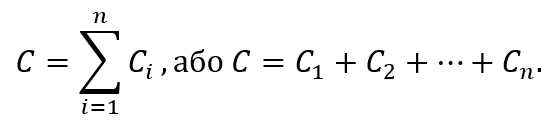
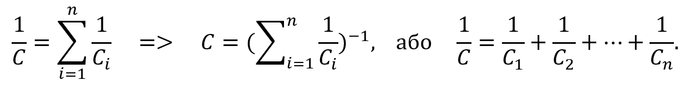
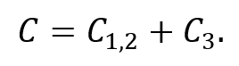
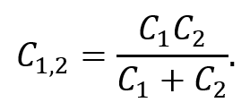
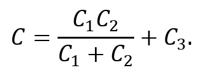

Способи збільшення та зменшення загальної ємності
Від способу з’єднання конденсаторів у колі залежить загальна ємність всього контуру. Для отримання більших ємностей конденсатори з’єднують паралельно. При цьому, напруга між обкладками всіх конденсаторів є однаковою.

Рисунок 2.5.1
Загальна ємність батареї паралельно з’єднаних конденсаторів (рис. 2.5.1) дорівнює сумі ємностей всіх конденсаторів, з яких вона складається:

Якщо у всіх паралельно з’єднаних конденсаторів однакова відстань між обкладками та діелектрики мають ідентичні властивості, то ці конденсатори можна представити у вигляді одного великого конденсатора, поділеного на фрагменти меншої площі.
При послідовному з’єднанні конденсаторів заряди всіх конденсаторів однакові, оскільки від джерела струму вони поступають тільки на зовнішні електроди, а на внутрішніх вони з’являються лише завдяки розділенню зарядів, які до цього нейтралізували одне одного.

Рисунок 2.5.2
Загальна ємність батареї послідовно з’єднаних конденсаторів (рис. 2.5.2) дорівнює:

Ця ємність завжди менше мінімальної ємності конденсаторів, з яких складається батарея. Однак, за послідовного з’єднання знижується вірогідність пробою конденсаторів, так як на кожен конденсатор припадає лише частина різниці потенціалів джерела напруги.
Якщо площа обкладок всіх послідовно з’єднаних конденсаторів є однаковою, то ці конденсатори можна представити у вигляді одного великого конденсатора, між обкладками якого знаходиться стопка з пластин діелектрика всіх конденсаторів, з яких він складається.

Рисунок 2.5.3
При змішаному з’єднанні конденсаторів схема може складатися з кількох підблоків послідовного та паралельного з’єднань. Для таких складних ланцюгів використовується правимо поетапного розрахунку: спочатку розраховується ємність найменших підблоків, після чого – більших.
Наприклад, розрахунок загальної ємності змішаної схеми, зображеної на рис. 2.5.3, має вигляд:

Подана ділянка кола являє собою з’єднання двох підблоків одного конденсатора C3 та послідовно з’єднаних C1 і C2. Для правильного розрахунку загальної ємності спочатку визначається ємність ділянки послідовного з’єднання за відповідною формулою:

Після підстановки цього виразу формула для знаходження загальної ємності ділянки кола набуває вигляду:

Змішане з’єднання конденсаторів використовується для створення батарей конденсаторів із конкретними, необхідними значення загальної ємності та робочої напруги, яких неможливо досягти лише послідовним або паралельним підключенням.